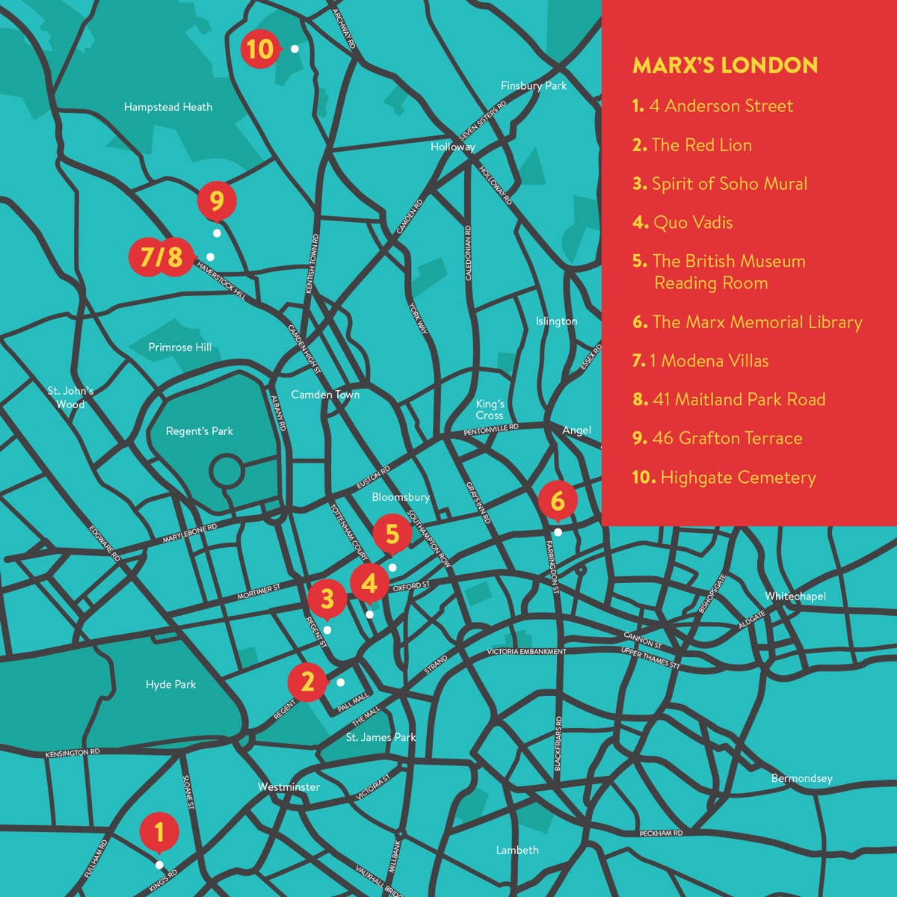

这一版排了路线：两天，由南往北。第一天中心区（Soho、大英博物馆、Clerkenwell），第二天北伦敦（Kentish Town、Maitland Park）和 Highgate。街面距离是坐标直线乘 1.35 的估算，走过一次再修。进馆、门票仍以官网为准。
起点是 Marx Walks 的周日团（marxwalks.com）。它把 Soho 段讲得很透，但只有 2.5 小时，范围不出 Piccadilly 一带——大英博物馆、Clerkenwell、北伦敦、Highgate 都不在团里。这一页把团内和团外接成两天：每个点给地址、年份、现在是什么、能不能进去、依据哪条来源；每段给时间和步行距离。
两天怎么走
两天，由南往北。第一天在中心区走完 Soho、大英博物馆和 Clerkenwell；第二天坐两站地铁，把北伦敦的三处住处和 Highgate 墓园走掉。第一天街面约 4 公里、第二天约 2 公里，留够吃饭和进馆的时间。
11 个点在一张图上
点颜色按「建筑现状」分：绿＝原建筑还在，褐＝已拆只剩址，深灰＝墓园。标 ≈ 的是街道级坐标（OSM 地理编码到街段，不是门牌精度），只用来判断相对位置，不用于导航。 底图 © OpenStreetMap contributors。
另一张图：十个点的走法

这张图只标位置，不含年份、开放时间和建筑现状；具体信息以下面的单点档案为准。若 Penguin 方面要求撤下，改用本页的 Leaflet 地图即可。
按区分段
路线已按两天排好，下面再把点按地理归拢一次，方便替换：某段不想去，整段拿掉不影响其余。Soho 与 Bloomsbury 步行相接；Clerkenwell 在东边；Kentish Town / Maitland Park 在北边；Highgate 再往北一点。
单点档案
每点四件事：地址、年份、有没有牌、能不能看。历史叙述只写有来源的，不确定的放进待核清单。
跟团：Marx Walks
- 时间
- 每周日 11:00–13:30，约 2.5 小时
- 价格
- £20；低收入优惠 £10（另加 Eventbrite 手续费，现金也可）
- 集合
- Piccadilly Circus，Criterion Theatre / Eros 雕像前
- 第一站
- Be At One 酒吧，20 Great Windmill Street W1D 7LA，约 11:30 离开
- 范围
- Soho 与 Piccadilly 一带：马克思居住和工作的地方，加 1848 年革命与 1871 年巴黎公社的讲解。不含 Clerkenwell、北伦敦、Highgate。
- 另一条
- 「Marx and Engels in Camden」，一般每月第一个周六 11:00，Chalk Farm 站出口集合
- 向导
- Heiko Khoo、Mark Bygrave；Heiko Khoo 参与撰写 2018 年《Karl Marx in London》指南
结论：这条团只覆盖第一天上午。第二天完全自己走；跟团的价值在讲解，不在覆盖范围。
进门信息
以下时间与票价截至 2026-11-10，取自各机构官网。出行前请再看一次官网。
| 地点 | 开放 | 票价 / 预约 |
|---|---|---|
| 马克思纪念图书馆 37a Clerkenwell Green |
导览：周一 12:00、周四 16:00 阅览室：周二至周四 11:00–16:00 周五至周日闭馆 |
导览 £10 / £5 阅览室须邮件预约 |
| Highgate Cemetery Swain's Lane, N6 6PJ |
3–10 月 10:00–17:00（16:30 停止入场） 11–2 月 10:00–16:00（15:30 停止入场） |
门票含东西两侧，单票价待核 导览成人 £18（约 75 分钟） |
| 大英博物馆 · 圆形阅览室 Great Russell Street |
博物馆免费；阅览室 2024 年 7 月起对公众开放，时段待核 | 免费；是否需预约待核 |
待核清单
这些是还没查实、故意不写死的项。v0.3 之前逐条消掉。
来源
坐标由 OpenStreetMap Nominatim 按地址地理编码，门牌级精度不足的标 ≈。本页不使用任何图片；史实叙述以英文来源为准，中文为本站整理。